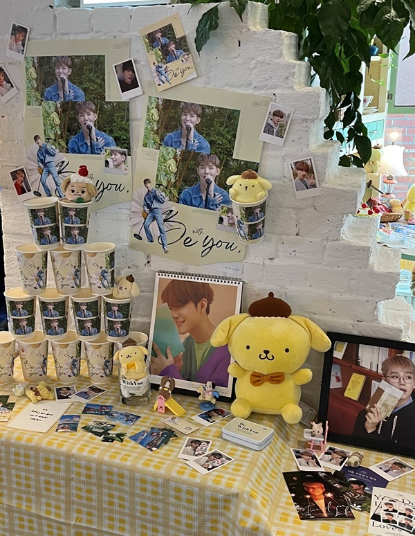
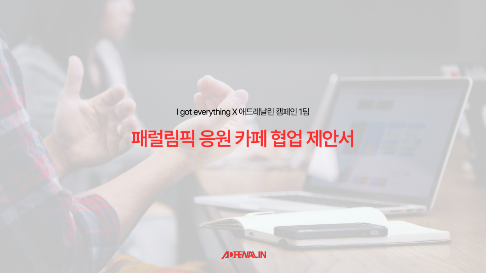
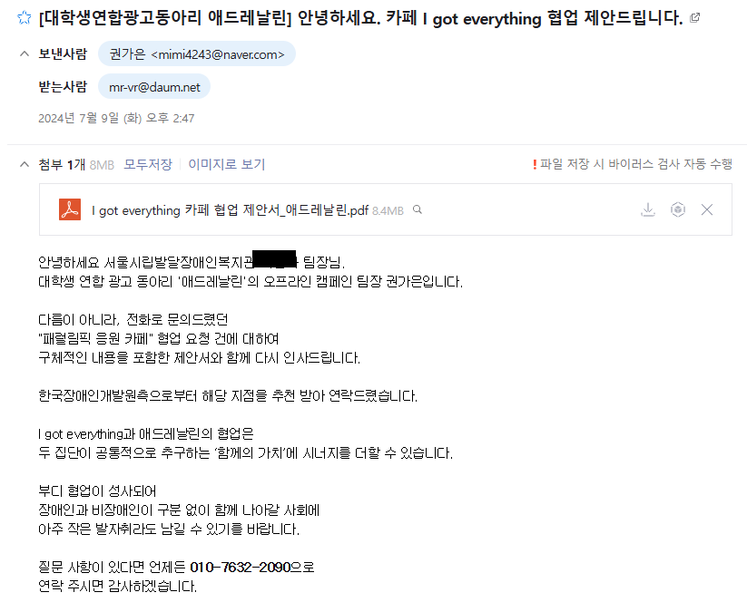

패럴림픽 응원카페
낯선 사회적 메시지를
2030이 자발적으로 참여하는 문화 경험으로 바꿨습니다.
패럴림픽을 2030에게 익숙한 생일카페의 참여 문법과 '곧 개봉할 영화'라는 컨셉으로 재해석했습니다.
티켓, 굿즈, 응원 메시지 작성까지 하나의 방문 경험으로 설계하고, 협업 카페 섭외부터 제작·발주·현장 운영까지 직접 이끌었습니다.
2일간 175명 방문
패럴림픽 응원카페
패럴림픽을 2030에게 익숙한 생일카페의 참여 문법과 '곧 개봉할 영화'라는 컨셉으로 재해석했습니다.
티켓, 굿즈, 응원 메시지 작성까지 하나의 방문 경험으로 설계하고, 협업 카페 섭외부터 제작·발주·현장 운영까지 직접 이끌었습니다.
2일간 175명 방문
Problem
패럴림픽은 사회적으로 의미 있는 스포츠 이벤트지만, 2030에게는 올림픽에 비해 접점이 적고 익숙하지 않은 주제였습니다.
"패럴림픽에 관심을 가져주세요"라는 메시지를 먼저 전달하는 방식만으로는 자발적인 방문과 참여를 만들기 어렵다고 판단했습니다.
"평소 패럴림픽에 관심이 없던 사람이 왜 일부러 이 공간에 올까?"
Cultural Translation & Concept
2030에게 익숙한 생일카페에서는 방문 → 공간 체험 → 굿즈 → 이벤트 → 응원이 자연스럽게 하나의 놀이처럼 이어집니다.
이 참여 문법을 패럴림픽 응원에 적용해, 공간 전체의 컨셉을 설정했습니다.

2030에게 익숙한 생일카페 사례

곧 개봉할 영화, 패럴림픽 — D-17 두 번째 성화
생일카페와 영화라는 소재는 낯선 주제의 진입장벽을 낮추기 위한 문화적 번역 방식이었습니다.
Experience Flow

Entry
영화 티켓 형태의 굿즈
패럴림픽을 하나의 개봉 예정작처럼 느끼게 하는 첫 접점

Participation
좌석번호 Lucky Draw
티켓의 좌석번호를 실제 이벤트와 연결

Discovery
패럴림픽 Quiz
정보를 가벼운 참여 방식으로 접하게 함

Message
Ending Credit 응원 메시지
방문객이 마지막에 선수에게 직접 응원을 남기도록 설계

Goods
컵홀더와 티코스터
음료 구매 시 모두에게 증정한 영화 컨셉 굿즈
처음 들어온 사람이 마지막에는 패럴림픽 응원자로 참여하게 되는 흐름입니다.
Execution & Project Management
공간 크기, 제작물 규격, 프로그램 배치, 굿즈 배치, 인력 운영을 구체화하려면 카페가 먼저 정해져야 했습니다.
협업처 확보를 최우선 과제로 정했습니다.
01 · 협업처 확보
직접 제안서를 작성해 카페에 컨택했습니다.
한국장애인개발원으로부터 추천받은 카페 'I got everything'에 협업 제안서를 작성해 직접 보냈습니다.

직접 작성한 협업 제안서

카페 담당자에게 보낸 협업 제안 메일
02 · 업무 우선순위
시급성과 영향도를 기준으로 업무 순서를 정했습니다.
기획팀 회의에서 아이디어의 컨셉 적합성을 확인하고, 확정된 내용을 제작팀에 전달해 일정과 역할을 관리했습니다.
03 · 제작 및 품질 관리
기획 의도가 결과물에서도 유지되는지 확인했습니다.
Figma로 제작물을 확인하며 영화 컨셉이 일관되게 적용됐는지, 방문객이 내용을 바로 이해할 수 있는지, 실제 출력 시 문제가 없는지,
공간에 배치했을 때 자연스러운지를 검토했습니다. 굿즈와 제작물의 발주 및 예산도 직접 관리했습니다.
04 · 현장 운영
방문객 흐름을 보며 인력을 조정했습니다.
캠페인 당일에는 방문객 흐름과 프로그램 운영 상황을 보며 시간대·구역별 인력을 배치했습니다.
현장 상황에 따라 역할을 조정하며 프로그램에 공백이 생기지 않도록 관리했습니다.

캠페인 당일 현장
Result
방문객은 영화 티켓, 럭키드로우, 패럴림픽 퀴즈, 응원 메시지 등을 통해 캠페인에 참여했습니다.